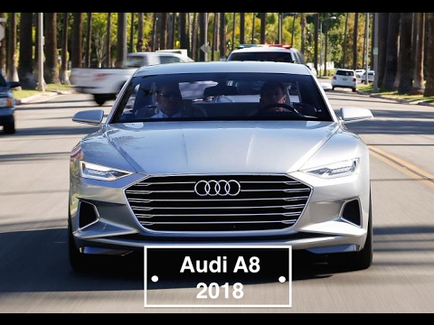
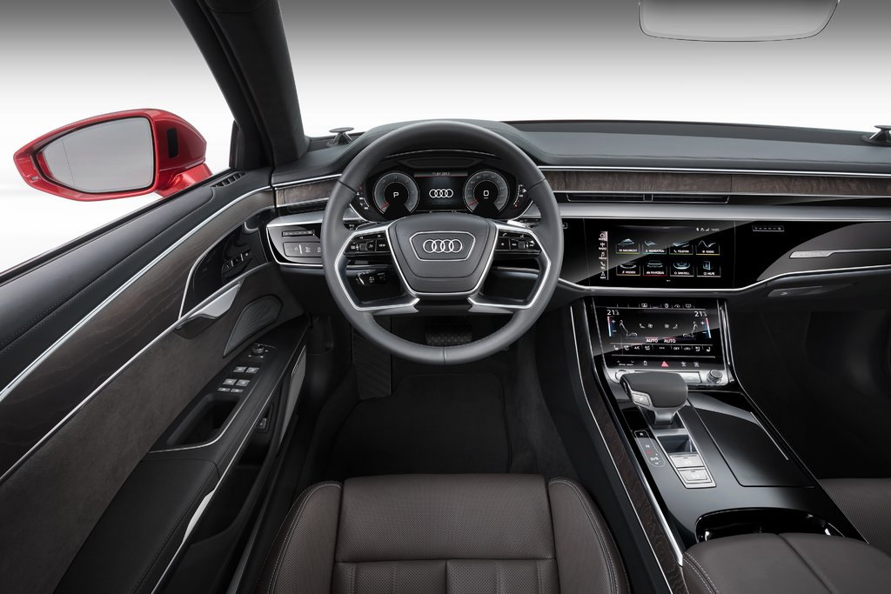
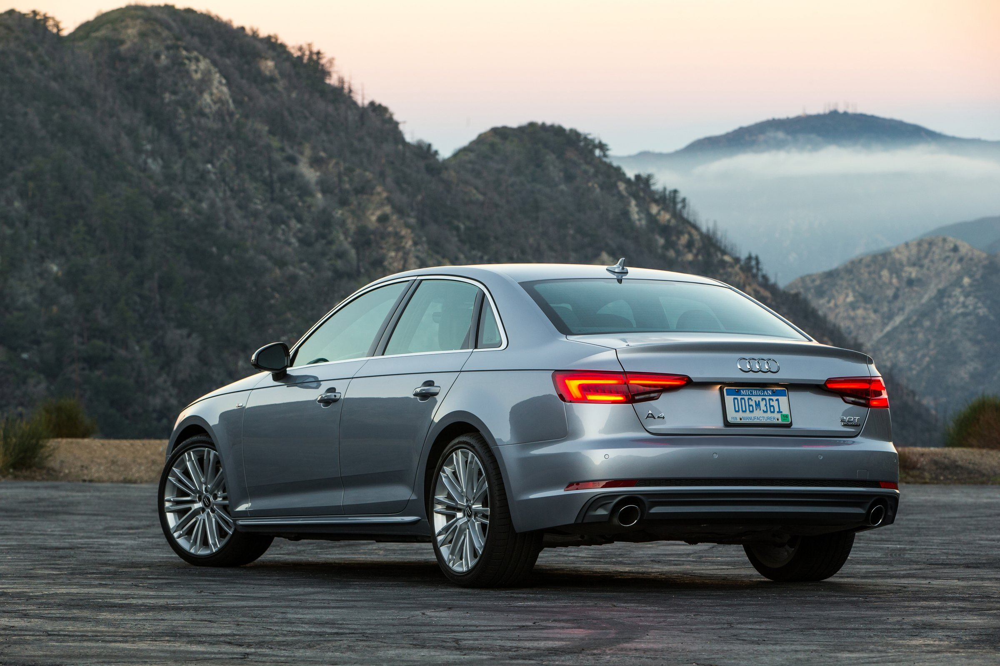
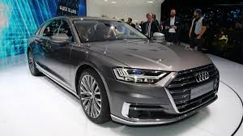
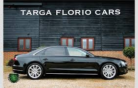
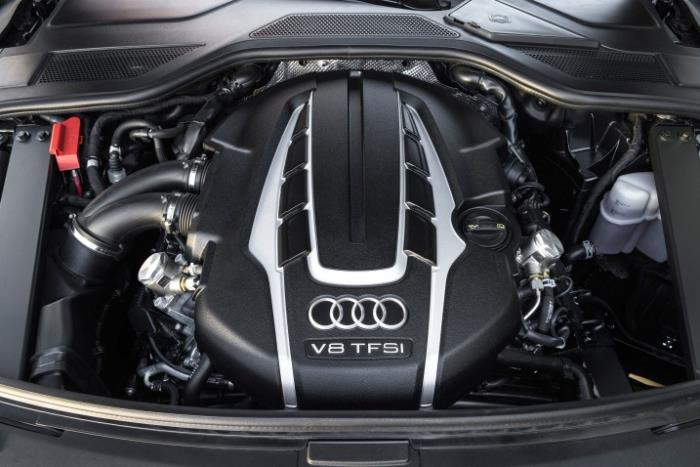

| Максимальная скорость, км/ч | 250 |
|---|
| Модельный год | 2017 |
| Тип кузова | Седан |
|---|
| Длина, мм | 5172 |
| Ширина, мм | 1945 |
|---|
| Высота, мм | 1475 |
| Колея передняя, мм | 1644 |
|---|
| Колея задняя, мм | 1633 |
| Колесная база, мм | 2998 |
|---|
| Диаметр разворота, м | 12.5 |
| Снаряженная масса, кг | 2050 |
|---|
| Полная масса, кг | 2690 |
| Объем багажника, л | 505 |
|---|
| Количество дверей | 4 |
| Количество мест | 5 |
|---|
| Количество мест | Полный |
| Тип двигателя | Дизельный с турбонаддувом |
|---|
| Число цилиндров / расположение | 6/V-образный |
| Мощность двигателя, л.с / оборотах | 286/3750-4000 |
|---|
| Рабочий объем двигателя, см³ | 2967 |
| Крутящий момент, н·м / оборотах | 600/1250-3250 |
|---|
| Вид топлива | ДТ |
| Объем топливного бака, л | 72 |
|---|
| Время разгона до 100 км/ч, сек | 5.9 |
| Расход топлива в городском цикле, л на 100 км | 6.5 |
|---|
| Расход топлива на трассе, л на 100 км | 5.5 |
| Расход топлива в смешанном цикле, л на 100 км | 5.8 |
|---|
| Тип коробки передач | Автоматическая, 8 передач |
| Усилитель руля | Электроусилитель |
|---|
| Передняя подвеска | Независимая, многорычажная |
| Задняя подвеска | Независимая, многорычажная |
|---|
| Передние тормоза | Дисковые вентилируемые |
| Задние тормоза | Дисковые вентилируемые |
|---|
| Электронные системы управления | ABS, ACCS, ASR, BAS, EBD, ESP, TCS |
| Управление климатом | Климат-контроль |
|---|
| Размер шин | 235/60 R17 |
| Размер дисков | 17x8J |
|---|





